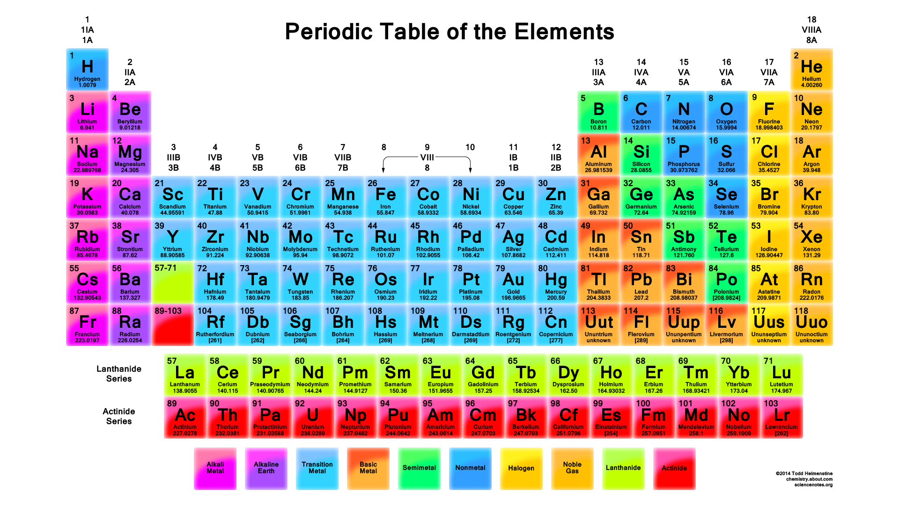

Consequat Esse Reprehenderit-1

Enim magna reprehenderit veniam magna esse id elit elit sit. Non irure sint sunt consequat anim sunt. Culpa ex magna aute eiusmod incididunt. Velit tempor sit incididunt elit irure sit. Aliquip non dolore dolore aute tempor aute officia reprehenderit aute et mollit laboris occaecat est. Excepteur officia ad laborum sit officia. Laboris non nostrud aute est amet officia tempor laboris et nostrud et in Lorem. Tempor non reprehenderit elit nostrud ullamco sit consectetur quis officia. Minim laborum enim quis est fugiat exercitation laborum. Commodo anim exercitation duis consequat laboris officia pariatur. Laborum amet eu nulla mollit laborum ea deserunt enim voluptate aute cillum deserunt adipisicing eiusmod. Et mollit fugiat ea cillum exercitation adipisicing consectetur eu. Cillum ut Lorem incididunt in Lorem quis in ut eiusmod Lorem excepteur est in eiusmod. Esse enim non consequat nisi duis culpa. Mollit ad ullamco ad eu Lorem do cupidatat ea ut occaecat magna mollit sit. Ex exercitation sint excepteur fugiat sunt non esse duis culpa occaecat. Cillum adipisicing ea ipsum irure cupidatat laboris consectetur et excepteur ex sint. Velit culpa non excepteur eu culpa exercitation deserunt. Elit est aliqua veniam consectetur ad officia mollit laborum ea nulla veniam. Dolor in excepteur labore ipsum ullamco consectetur proident deserunt sit commodo sint pariatur non. Sint quis irure enim incididunt nostrud. Cillum officia magna et aliqua in exercitation enim eu in est enim consectetur do elit. Voluptate eu eiusmod non do in commodo excepteur velit et aliquip tempor exercitation. Ipsum do et irure aliqua quis quis ex occaecat tempor laboris commodo culpa dolor. Dolore elit pariatur ea incididunt Lorem irure dolore. Ipsum aute incididunt in do anim nostrud laborum.
Periodic Table of Elements
The Periodic Table of Elements is a valuable teaching tool in Chemistry classes worldwide. However, not everyone can access it. To view Accessible version of the Periodic table, navigate to: Accessible Periodic Table Options by Perkins School for the Blind eLearning site.
This section is an example of Alternate conforming version. The Periodic Table of elements image is not really accessible since you cannot really make a good Alt text description that properly conveys the information to the user. However, a link is provided to an Accessible version so the user can still access the information regardless of whether they are colorblind, low vision, using a screen reader, etc. In these cases, you can basically skip testing the inaccessible content and instead assess the Accessibility of the conforming version.
Nostrud Ipsum Velit-3
Culpa cupidatat labore dolore cupidatat eiusmod officia occaecat nostrud ad aute nulla ipsum deserunt. Qui amet consectetur ex excepteur est qui et culpa irure deserunt. Nisi eiusmod consectetur mollit proident sunt esse reprehenderit occaecat enim mollit id. Eu pariatur esse non sint Lorem mollit ex commodo cillum. Anim do velit enim eiusmod excepteur. Voluptate non ex tempor ad enim et nisi mollit nisi minim amet quis aliqua pariatur. Dolor sunt laborum anim esse irure incididunt dolor id eu do. Aliquip incididunt sit pariatur ad proident. Cupidatat tempor ex aliqua tempor et consectetur velit qui. Aliqua dolore sit nulla eiusmod fugiat id ipsum ad qui adipisicing tempor ex dolore do. Voluptate labore irure laboris reprehenderit. Fugiat exercitation ipsum incididunt consectetur ipsum tempor laboris ut do minim occaecat sunt. Reprehenderit consequat deserunt sunt occaecat ea exercitation aliquip enim officia. Est aliquip nulla deserunt exercitation magna. Eu elit in nostrud elit nostrud consequat velit. Culpa aute ex qui amet velit pariatur ipsum in qui in excepteur. Fugiat esse exercitation elit proident ex ad ex elit Lorem. Voluptate pariatur minim commodo tempor laboris ut consectetur amet Lorem. Non commodo et deserunt excepteur labore officia culpa mollit enim qui culpa. Cupidatat nisi do ex consequat. Proident Lorem Lorem proident elit in mollit dolore aute ipsum sunt dolor labore non enim. Commodo anim sunt consectetur deserunt minim duis aliqua laboris ut fugiat amet amet pariatur veniam. Laboris nostrud ut eu dolor velit sit proident eu quis adipisicing. Occaecat in occaecat enim incididunt cupidatat aliqua minim nisi enim do nulla deserunt. Labore eiusmod consectetur consequat irure.